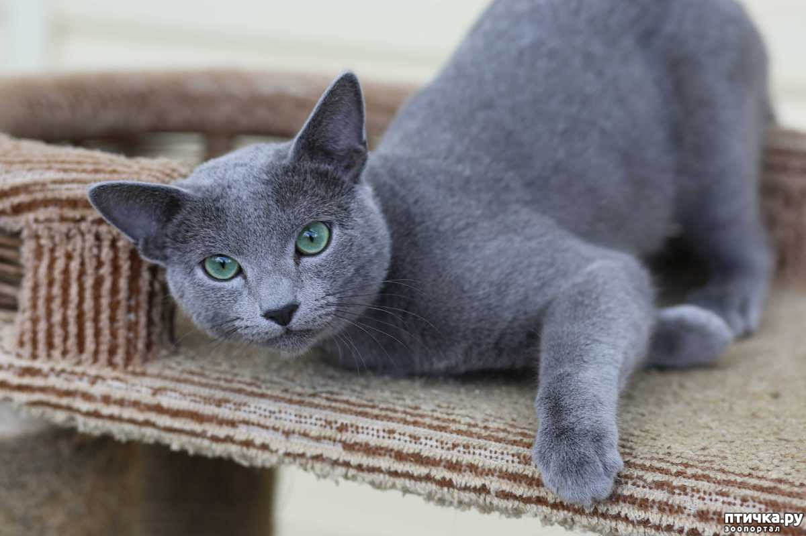
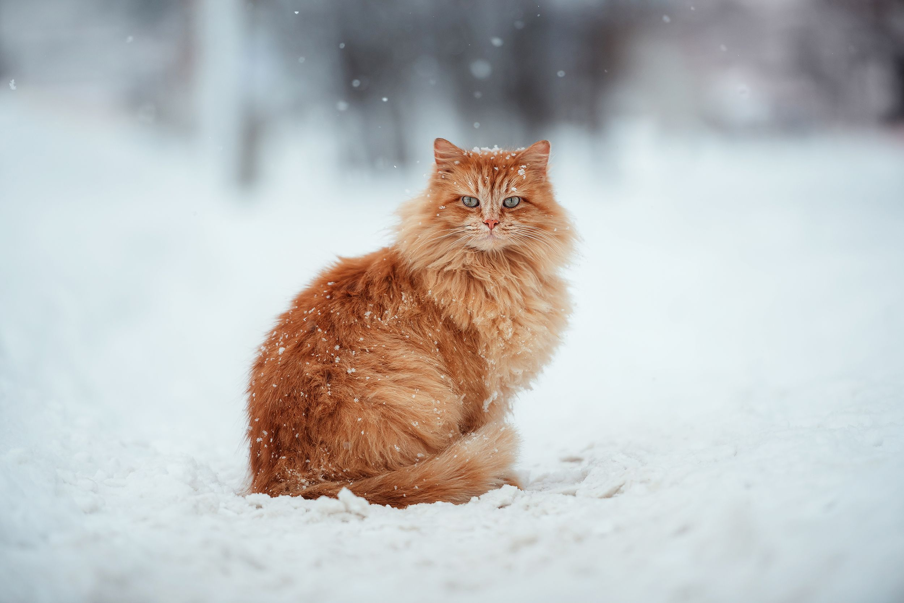

Котоблог
-
Фунтик

Чёрно-белые биколоры примерно на одну треть или наполовину покрыты белой шерстью. Голова, спина и хвост обычно чёрные, а воротник на шее, треугольник на мордочке, грудь, живот — белые. Именно к этому подвиду принадлежат «кошки в смокинге» — tuxedo cats.
20.01.2024 -
Симба
Кошки породы русская голубая бывают среднего или крупного размера. Имеют изящное тело и длинные, стройные ноги. Эта кошка настолько грациозна, что кажется, будто она передвигается на цыпочках.
21.01.2024 -
Тимоша
Рыжий, вернее, по-научному красный окрас присущ котам и кошкам. Но самцы гораздо чаще бывают яркого оттенка, чем самки. У котов ген «рыжести» доминирующий, а вот кошки чаще получают двухцветную или трехцветную шкурку. У самок обычно белая грудка или «сапожки».
22.01.2024